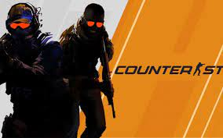

Counter-Strike: O Jogo que Revolucionou os eSports
Autor: Lucas Mendes
Data de Lançamento do Artigo: 28 de maio de 2023
Nos últimos anos, os eSports têm ganhado um enorme destaque e popularidade em todo o mundo. Dentre os diversos jogos competitivos que dominam o cenário dos esportes eletrônicos, o Counter-Strike se destaca como um dos mais influentes e amados pelos jogadores. Desde o seu lançamento em 1999, o Counter-Strike tem revolucionado a forma como os jogos são vistos e jogados, moldando a indústria dos eSports e proporcionando competições emocionantes e milhões de fãs ao redor do globo.
Origens e Evolução:
O Counter-Strike surgiu como um mod do jogo Half-Life, desenvolvido pela Valve Corporation. Criado por dois estudantes universitários, Minh "Gooseman" Le e Jess "Cliffe" Cliffe, o jogo rapidamente ganhou popularidade entre os jogadores de PC. Sua jogabilidade tática e equipe, onde um time assume o papel de terroristas e o outro de forças especiais, conquistou uma base fiel de fãs.
Em 2000, a Valve adquiriu os direitos do Counter-Strike e lançou uma versão independente do jogo chamada "Counter-Strike 1.0". Com a Valve por trás do projeto, o jogo começou a receber atualizações regulares e se tornou ainda mais refinado. A comunidade de jogadores também desempenhou um papel crucial no desenvolvimento do Counter-Strike, criando mapas personalizados, modificações e promovendo competições.
Em 2004, a Valve lançou o Counter-Strike: Source, uma versão atualizada do jogo que utilizava a Source Engine, proporcionando melhorias gráficas e mecânicas de jogo aprimoradas. Mais tarde, em 2012, a Valve lançou o Counter-Strike: Global Offensive (CS:GO), a mais recente iteração do jogo. O CS:GO trouxe melhorias significativas, incluindo gráficos aprimorados, jogabilidade refinada, novos modos de jogo e suporte para partidas competitivas online.
Competições e eSports:
O Counter-Strike é amplamente considerado um dos jogos mais importantes para a popularização dos eSports. A partir do início dos anos 2000, o jogo começou a ganhar destaque no cenário competitivo, com a realização de torneios locais e regionais. No entanto, foi em 2001 que o Counter-Strike ganhou uma visibilidade global com o primeiro grande torneio internacional: o Cyberathlete Professional League (CPL) Winter Championship. O evento contou com equipes de todo o mundo competindo por uma premiação em dinheiro, e foi um marco na história dos eSports.
Desde então, inúmeros torneios e ligas foram criados, incluindo a Electronic Sports World Cup (ESWC), a Intel Extreme Masters (IEM) e a DreamHack Masters. Além disso, o CS:GO foi incluído nos Jogos Eletrônicos Mundiais (WESG), nos Jogos Asiáticos Indoor e de Artes Marciais e até mesmo nos Jogos Olímpicos de Esporte Eletrônico, mostrando a crescente aceitação dos eSports como uma forma legítima de competição esportiva.
As competições de CS:GO têm atraído milhões de espectadores online